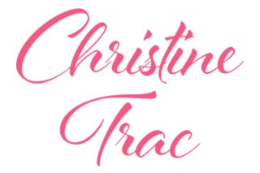
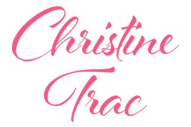

My adoration for art stemmed long before I even knew what engineering was. I began drawing as a hobby since I was 8 by attending art classes for a couple of years. In elementary school, it was my goal to pursue visual arts and design because I felt I was talented at it and I liked it a lot. Yet when I entered high school, I began to value and enjoy math and science and put my childhood goal aside as a hobby. I then decided that instead, I wanted to become an engineer.
| organic. |
|---|
| This piece is depicting an organic-looking girl with patterns of leaves on her face. Materials used were watercolour, pencil and black ink. |

| lana. |
|---|
| This piece is a portrait of Lana Del Rey, my favourite American singer. The only material used was pencil. |

| violet. |
|---|
| This piece is depicting an illustrative girl with purple hair. Materials used were watercolour, black ink and white gel pens. |